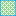

<!doctype html>
<html lang="en">
    <head>
        <meta charset="utf-8">
        <meta http-equiv="X-UA-Compatible" content="IE=edge">
        <meta name="viewport" content="initial-scale=1,user-scalable=no,maximum-scale=1,width=device-width">
        <meta name="mobile-web-app-capable" content="yes">
        <meta name="apple-mobile-web-app-capable" content="yes">
        <link rel="stylesheet" href="css/leaflet.css"><link rel="stylesheet" href="css/L.Control.Locate.min.css">
        <link rel="stylesheet" href="css/qgis2web.css"><link rel="stylesheet" href="css/fontawesome-all.min.css">
        <link rel="stylesheet" href="css/leaflet-search.css">
        <link rel="stylesheet" href="css/leaflet-control-geocoder.Geocoder.css">
        <link rel="stylesheet" href="css/leaflet-measure.css">
        <style>
        #map {
            width: 1599px;
            height: 788px;
        }
        </style>
        <title>Bugolobi Parish</title>
    </head>
    <body>
        <div id="map">
        </div>
        <script src="js/qgis2web_expressions.js"></script>
        <script src="js/leaflet.js"></script><script src="js/L.Control.Locate.min.js"></script>
        <script src="js/leaflet.rotatedMarker.js"></script>
        <script src="js/leaflet.pattern.js"></script>
        <script src="js/leaflet-hash.js"></script>
        <script src="js/Autolinker.min.js"></script>
        <script src="js/rbush.min.js"></script>
        <script src="js/labelgun.min.js"></script>
        <script src="js/labels.js"></script>
        <script src="js/leaflet-control-geocoder.Geocoder.js"></script>
        <script src="js/leaflet-measure.js"></script>
        <script src="js/leaflet-search.js"></script>
        <script src="data/BugolobiParish_2.js"></script>
        <script src="data/Villages_3.js"></script>
        <script src="data/Wetlands_4.js"></script>
        <script src="data/Parcels_5.js"></script>
        <script src="data/Roads_6.js"></script>
        <script>
        var map = L.map('map', {
            zoomControl:true, maxZoom:28, minZoom:1
        })
        var hash = new L.Hash(map);
        map.attributionControl.setPrefix('<a href="https://github.com/tomchadwin/qgis2web" target="_blank">qgis2web</a> &middot; <a href="https://leafletjs.com" title="A JS library for interactive maps">Leaflet</a> &middot; <a href="https://qgis.org">QGIS</a>');
        var autolinker = new Autolinker({truncate: {length: 30, location: 'smart'}});
        L.control.locate({locateOptions: {maxZoom: 19}}).addTo(map);
        var measureControl = new L.Control.Measure({
            position: 'topleft',
            primaryLengthUnit: 'meters',
            secondaryLengthUnit: 'kilometers',
            primaryAreaUnit: 'sqmeters',
            secondaryAreaUnit: 'hectares'
        });
        measureControl.addTo(map);
        document.getElementsByClassName('leaflet-control-measure-toggle')[0]
        .innerHTML = '';
        document.getElementsByClassName('leaflet-control-measure-toggle')[0]
        .className += ' fas fa-ruler';
        var bounds_group = new L.featureGroup([]);
        function setBounds() {
            if (bounds_group.getLayers().length) {
                map.fitBounds(bounds_group.getBounds());
            }
        }
        map.createPane('pane_GoogleSatelliteHybrid_0');
        map.getPane('pane_GoogleSatelliteHybrid_0').style.zIndex = 400;
        var layer_GoogleSatelliteHybrid_0 = L.tileLayer('https://mt1.google.com/vt/lyrs=y&x={x}&y={y}&z={z}', {
            pane: 'pane_GoogleSatelliteHybrid_0',
            opacity: 0.5,
            attribution: '',
            minZoom: 1,
            maxZoom: 28,
            minNativeZoom: 0,
            maxNativeZoom: 19
        });
        layer_GoogleSatelliteHybrid_0;
        map.addLayer(layer_GoogleSatelliteHybrid_0);
        map.createPane('pane_OSMStandard_1');
        map.getPane('pane_OSMStandard_1').style.zIndex = 401;
        var layer_OSMStandard_1 = L.tileLayer('http://tile.openstreetmap.org/{z}/{x}/{y}.png', {
            pane: 'pane_OSMStandard_1',
            opacity: 0.5,
            attribution: '<a href="https://www.openstreetmap.org/copyright">© OpenStreetMap contributors, CC-BY-SA</a>',
            minZoom: 1,
            maxZoom: 28,
            minNativeZoom: 0,
            maxNativeZoom: 19
        });
        layer_OSMStandard_1;
        map.addLayer(layer_OSMStandard_1);
        function pop_BugolobiParish_2(feature, layer) {
            var popupContent = '<table>\
                    <tr>\
                        <th scope="row">PNAME2014</th>\
                        <td>' + (feature.properties['PNAME2014'] !== null ? autolinker.link(feature.properties['PNAME2014'].toLocaleString()) : '') + '</td>\
                    </tr>\
                </table>';
            layer.bindPopup(popupContent, {maxHeight: 400});
        }

        function style_BugolobiParish_2_0() {
            return {
                pane: 'pane_BugolobiParish_2',
                opacity: 1,
                color: 'rgba(0,0,0,1.0)',
                dashArray: '',
                lineCap: 'butt',
                lineJoin: 'miter',
                weight: 3.0, 
                fillOpacity: 0,
                interactive: false,
            }
        }
        map.createPane('pane_BugolobiParish_2');
        map.getPane('pane_BugolobiParish_2').style.zIndex = 402;
        map.getPane('pane_BugolobiParish_2').style['mix-blend-mode'] = 'normal';
        var layer_BugolobiParish_2 = new L.geoJson(json_BugolobiParish_2, {
            attribution: '',
            interactive: false,
            dataVar: 'json_BugolobiParish_2',
            layerName: 'layer_BugolobiParish_2',
            pane: 'pane_BugolobiParish_2',
            onEachFeature: pop_BugolobiParish_2,
            style: style_BugolobiParish_2_0,
        });
        bounds_group.addLayer(layer_BugolobiParish_2);
        map.addLayer(layer_BugolobiParish_2);
        function pop_Villages_3(feature, layer) {
            var popupContent = '<table>\
                    <tr>\
                        <th scope="row">SNAME2014</th>\
                        <td>' + (feature.properties['SNAME2014'] !== null ? autolinker.link(feature.properties['SNAME2014'].toLocaleString()) : '') + '</td>\
                    </tr>\
                    <tr>\
                        <th scope="row">PNAME2014</th>\
                        <td>' + (feature.properties['PNAME2014'] !== null ? autolinker.link(feature.properties['PNAME2014'].toLocaleString()) : '') + '</td>\
                    </tr>\
                    <tr>\
                        <th scope="row">Villag2014</th>\
                        <td>' + (feature.properties['Villag2014'] !== null ? autolinker.link(feature.properties['Villag2014'].toLocaleString()) : '') + '</td>\
                    </tr>\
                </table>';
            layer.bindPopup(popupContent, {maxHeight: 400});
        }

        function style_Villages_3_0() {
            return {
                pane: 'pane_Villages_3',
                opacity: 1,
                color: 'rgba(161,132,132,1.0)',
                dashArray: '',
                lineCap: 'butt',
                lineJoin: 'miter',
                weight: 3.0, 
                fillOpacity: 0,
                interactive: true,
            }
        }
        map.createPane('pane_Villages_3');
        map.getPane('pane_Villages_3').style.zIndex = 403;
        map.getPane('pane_Villages_3').style['mix-blend-mode'] = 'normal';
        var layer_Villages_3 = new L.geoJson(json_Villages_3, {
            attribution: '',
            interactive: true,
            dataVar: 'json_Villages_3',
            layerName: 'layer_Villages_3',
            pane: 'pane_Villages_3',
            onEachFeature: pop_Villages_3,
            style: style_Villages_3_0,
        });
        bounds_group.addLayer(layer_Villages_3);
        map.addLayer(layer_Villages_3);
        function pop_Wetlands_4(feature, layer) {
            var popupContent = '<table>\
                    <tr>\
                        <td colspan="2">' + (feature.properties['OBJECTID'] !== null ? autolinker.link(feature.properties['OBJECTID'].toLocaleString()) : '') + '</td>\
                    </tr>\
                    <tr>\
                        <td colspan="2">' + (feature.properties['OBJECTID_1'] !== null ? autolinker.link(feature.properties['OBJECTID_1'].toLocaleString()) : '') + '</td>\
                    </tr>\
                    <tr>\
                        <td colspan="2">' + (feature.properties['CLASS'] !== null ? autolinker.link(feature.properties['CLASS'].toLocaleString()) : '') + '</td>\
                    </tr>\
                    <tr>\
                        <th scope="row">LUCNAME</th>\
                        <td>' + (feature.properties['LUCNAME'] !== null ? autolinker.link(feature.properties['LUCNAME'].toLocaleString()) : '') + '</td>\
                    </tr>\
                    <tr>\
                        <td colspan="2">' + (feature.properties['Shape_Leng'] !== null ? autolinker.link(feature.properties['Shape_Leng'].toLocaleString()) : '') + '</td>\
                    </tr>\
                    <tr>\
                        <td colspan="2">' + (feature.properties['Shape_Le_1'] !== null ? autolinker.link(feature.properties['Shape_Le_1'].toLocaleString()) : '') + '</td>\
                    </tr>\
                    <tr>\
                        <th scope="row">Shape_Area</th>\
                        <td>' + (feature.properties['Shape_Area'] !== null ? autolinker.link(feature.properties['Shape_Area'].toLocaleString()) : '') + '</td>\
                    </tr>\
                </table>';
            layer.bindPopup(popupContent, {maxHeight: 400});
        }

        function style_Wetlands_4_0() {
            return {
                pane: 'pane_Wetlands_4',
                opacity: 1,
                color: 'rgba(18,159,234,1.0)',
                dashArray: '',
                lineCap: 'butt',
                lineJoin: 'miter',
                weight: 1.0, 
                fill: true,
                fillOpacity: 1,
                fillColor: 'rgba(29,187,18,0.5098039215686274)',
                interactive: true,
            }
        }
        map.createPane('pane_Wetlands_4');
        map.getPane('pane_Wetlands_4').style.zIndex = 404;
        map.getPane('pane_Wetlands_4').style['mix-blend-mode'] = 'normal';
        var layer_Wetlands_4 = new L.geoJson(json_Wetlands_4, {
            attribution: '',
            interactive: true,
            dataVar: 'json_Wetlands_4',
            layerName: 'layer_Wetlands_4',
            pane: 'pane_Wetlands_4',
            onEachFeature: pop_Wetlands_4,
            style: style_Wetlands_4_0,
        });
        bounds_group.addLayer(layer_Wetlands_4);
        map.addLayer(layer_Wetlands_4);
        function pop_Parcels_5(feature, layer) {
            var popupContent = '<table>\
                    <tr>\
                        <td colspan="2">' + (feature.properties['Block'] !== null ? autolinker.link(feature.properties['Block'].toLocaleString()) : '') + '</td>\
                    </tr>\
                    <tr>\
                        <td colspan="2">' + (feature.properties['Plot'] !== null ? autolinker.link(feature.properties['Plot'].toLocaleString()) : '') + '</td>\
                    </tr>\
                    <tr>\
                        <td colspan="2">' + (feature.properties['Road'] !== null ? autolinker.link(feature.properties['Road'].toLocaleString()) : '') + '</td>\
                    </tr>\
                    <tr>\
                        <td colspan="2">' + (feature.properties['Owners'] !== null ? autolinker.link(feature.properties['Owners'].toLocaleString()) : '') + '</td>\
                    </tr>\
                    <tr>\
                        <th scope="row">Area_Ac</th>\
                        <td>' + (feature.properties['Area_Ac'] !== null ? autolinker.link(feature.properties['Area_Ac'].toLocaleString()) : '') + '</td>\
                    </tr>\
                    <tr>\
                        <th scope="row">Plot_Rd</th>\
                        <td>' + (feature.properties['Plot_Rd'] !== null ? autolinker.link(feature.properties['Plot_Rd'].toLocaleString()) : '') + '</td>\
                    </tr>\
                </table>';
            layer.bindPopup(popupContent, {maxHeight: 400});
        }

        function style_Parcels_5_0() {
            return {
                pane: 'pane_Parcels_5',
                opacity: 1,
                color: 'rgba(219,153,203,1.0)',
                dashArray: '',
                lineCap: 'butt',
                lineJoin: 'miter',
                weight: 2.0, 
                fillOpacity: 0,
                interactive: true,
            }
        }
        map.createPane('pane_Parcels_5');
        map.getPane('pane_Parcels_5').style.zIndex = 405;
        map.getPane('pane_Parcels_5').style['mix-blend-mode'] = 'normal';
        var layer_Parcels_5 = new L.geoJson(json_Parcels_5, {
            attribution: '',
            interactive: true,
            dataVar: 'json_Parcels_5',
            layerName: 'layer_Parcels_5',
            pane: 'pane_Parcels_5',
            onEachFeature: pop_Parcels_5,
            style: style_Parcels_5_0,
        });
        bounds_group.addLayer(layer_Parcels_5);
        map.addLayer(layer_Parcels_5);
        function pop_Roads_6(feature, layer) {
            var popupContent = '<table>\
                    <tr>\
                        <th scope="row">ROAD_NAME</th>\
                        <td>' + (feature.properties['ROAD_NAME'] !== null ? autolinker.link(feature.properties['ROAD_NAME'].toLocaleString()) : '') + '</td>\
                    </tr>\
                    <tr>\
                        <th scope="row">Length_Mtr</th>\
                        <td>' + (feature.properties['Length_Mtr'] !== null ? autolinker.link(feature.properties['Length_Mtr'].toLocaleString()) : '') + '</td>\
                    </tr>\
                </table>';
            layer.bindPopup(popupContent, {maxHeight: 400});
        }

        function style_Roads_6_0() {
            return {
                pane: 'pane_Roads_6',
                opacity: 1,
                color: 'rgba(227,26,28,1.0)',
                dashArray: '',
                lineCap: 'square',
                lineJoin: 'bevel',
                weight: 3.0,
                fillOpacity: 0,
                interactive: true,
            }
        }
        map.createPane('pane_Roads_6');
        map.getPane('pane_Roads_6').style.zIndex = 406;
        map.getPane('pane_Roads_6').style['mix-blend-mode'] = 'normal';
        var layer_Roads_6 = new L.geoJson(json_Roads_6, {
            attribution: '',
            interactive: true,
            dataVar: 'json_Roads_6',
            layerName: 'layer_Roads_6',
            pane: 'pane_Roads_6',
            onEachFeature: pop_Roads_6,
            style: style_Roads_6_0,
        });
        bounds_group.addLayer(layer_Roads_6);
        map.addLayer(layer_Roads_6);
            var title = new L.Control();
            title.onAdd = function (map) {
                this._div = L.DomUtil.create('div', 'info');
                this.update();
                return this._div;
            };
            title.update = function () {
                this._div.innerHTML = '<h2>Bugolobi Parish</h2>';
            };
            title.addTo(map);
        var osmGeocoder = new L.Control.Geocoder({
            collapsed: true,
            position: 'topleft',
            text: 'Search',
            title: 'Testing'
        }).addTo(map);
        document.getElementsByClassName('leaflet-control-geocoder-icon')[0]
        .className += ' fa fa-search';
        document.getElementsByClassName('leaflet-control-geocoder-icon')[0]
        .title += 'Search for a place';
        var baseMaps = {};
        L.control.layers(baseMaps,{' Roads': layer_Roads_6,' Parcels': layer_Parcels_5,' Wetlands': layer_Wetlands_4,' Villages': layer_Villages_3,' Bugolobi Parish': layer_BugolobiParish_2,"OSM Standard": layer_OSMStandard_1,"Google Satellite Hybrid": layer_GoogleSatelliteHybrid_0,}).addTo(map);
        setBounds();
        map.addControl(new L.Control.Search({
            layer: layer_Parcels_5,
            initial: false,
            hideMarkerOnCollapse: true,
            propertyName: 'Plot_Rd'}));
        document.getElementsByClassName('search-button')[0].className +=
         ' fa fa-binoculars';
        </script>
    </body>
</html>
